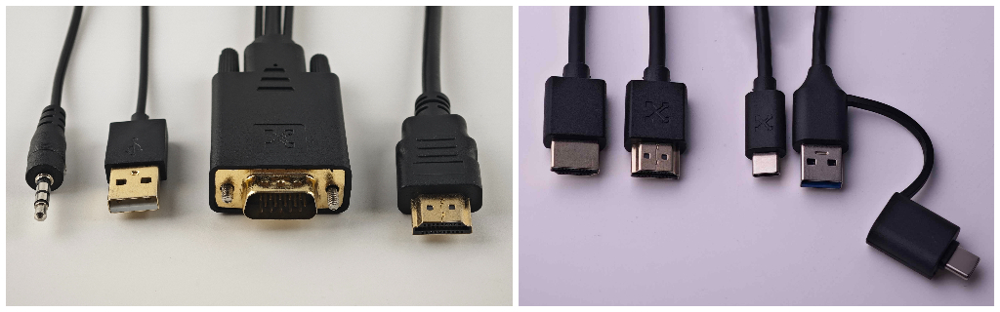
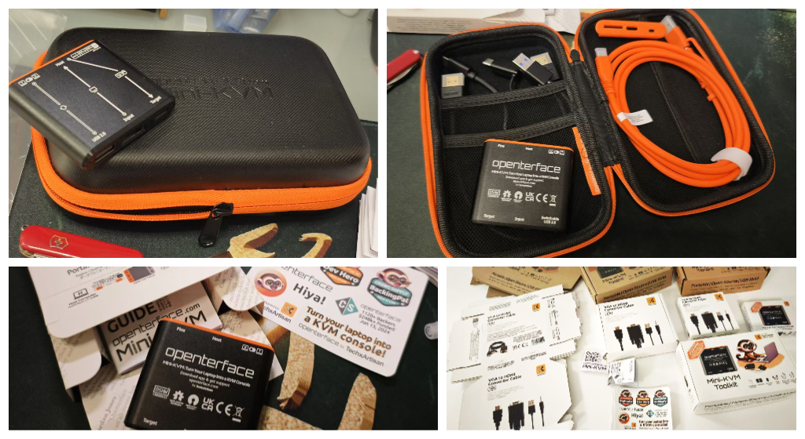

Hola a todos,
Espero que estén bien. Ha pasado un tiempo desde nuestra última actualización. Me gustaría decir que todo ha ido sobre ruedas para Openterface, pero hemos encontrado algunos obstáculos que retrasarán nuestro cronograma de entrega. Aunque no era lo que esperábamos, estamos enfrentando estos desafíos de frente y avanzando con paso firme, con muchas buenas noticias para compartir. Esta publicación es una lectura de aproximadamente 7 minutos, así que vamos a los detalles para que sepan exactamente en qué punto estamos y qué viene a continuación.
Antes de comenzar la producción, tuvimos que pasar las pruebas de calidad necesarias según las regulaciones, en particular la certificación CE. Dado que nuestra versión del kit incluye no solo el Mini-KVM sino también varios accesorios, cada parte necesitaba pasar las pruebas CE. Estas pruebas tomaron más tiempo del esperado (resulta que los cables pueden ser bastante exigentes), pero la buena noticia es que hemos pasado la certificación CE para nuestro Mini-KVM y todos sus componentes! A continuación, un resumen de las certificaciones para todas nuestras partes: Mini-KVM, cable HDMI, cable naranja Tipo-C, cable corto negro Tipo-C y cable VGA2HDMI. Con la certificación en mano, nuestro cronograma de producción ahora es seguro, y nuestros fabricantes están produciendo todas las partes mientras hablo.
 Los requisitos de UKCA y CE son los mismos para nuestros productos electrónicos, con CE también cubriendo el cumplimiento de RoHS.
Los requisitos de UKCA y CE son los mismos para nuestros productos electrónicos, con CE también cubriendo el cumplimiento de RoHS.
Hace dos semanas, visitamos a uno de nuestros fabricantes para capacitar a sus gerentes de línea en el control de calidad de los cables naranjas antes de que nos los enviaran. Ahora, TODOS los cables naranjas han sido producidos y están en un rincón de nuestro estudio.
 Kevin y Shawn explicaban los métodos de prueba para asegurar que el cable naranja funcione correctamente con nuestro Mini-KVM de Openterface.
Kevin y Shawn explicaban los métodos de prueba para asegurar que el cable naranja funcione correctamente con nuestro Mini-KVM de Openterface.
Haremos la misma tarea esta semana para capacitar al equipo de control de calidad en la línea de producción para las otras partes también. Aquí hay muestras de cables adicionales.

Marcados con orgullo con nuestro logo TechxArtisan, estas son muestras del cable HDMI, el cable corto Tipo-C y el cable VGA a HDMI.
Esperamos que las otras partes y los Mini-KVMs lleguen pronto de nuestros fabricantes, momento en el cual revisaremos la calidad de cada componente y los empaquetaremos adecuadamente en nuestro estudio antes del envío. En otras palabras, nuestro equipo se asegurará personalmente de la calidad antes de que llegue a sus manos.
La incertidumbre actual radica en el proceso de envío. Después de investigar varias compañías de envío, descubrimos que el envío tomará más tiempo ya que probablemente transferiremos los paquetes a través de un almacén antes de llegar al almacén de Crowd Supply. Todavía estamos debatiendo si elegir transporte marítimo o aéreo—por favor, tengan paciencia con nosotros unos días más mientras resolvemos los arreglos.
El despacho de aduanas es otro posible obstáculo que podría causar retrasos inesperados. Una vez que nuestros productos lleguen al almacén de Crowd Supply en los EE. UU., tomarán de una a dos semanas para enviarse globalmente según cada pedido. Para los patrocinadores fuera de los EE. UU., los paquetes individuales aún necesitarán pasar por el envío global y el despacho de aduanas en el país de destino.
Teniendo en cuenta la situación actual y añadiendo algo de tiempo de reserva, sigo siendo cautelosamente optimista de que completaremos la entrega antes de fin de año, con una nueva ETA a mediados de enero. Lamento sinceramente los inconvenientes y agradezco su apoyo y paciencia durante este cambio.
Como saben por nuestra anterior publicación en Reddit, decidimos actualizar nuestro hardware a V1.9, incluyendo un conjunto de pines de expansión hackeables. Esto no formaba parte del plan original para la campaña de crowdfunding, pero creemos que mejora significativamente el potencial de uso más amplio del hardware.
 Los pines VCC, GND, Target D+, Target D-, Host D+ y Host D-—donde 'D' significa datos USB.
Los pines VCC, GND, Target D+, Target D-, Host D+ y Host D-—donde 'D' significa datos USB.
Una motivación clave fue permitir que el interruptor USB se pueda activar a nivel de software. ¿Por qué es esto importante? En nuestra hoja de ruta, apuntamos a soportar una solución KVM-over-IP, como VNC, en el futuro. La idea es combinar el control local de KVM con el protocolo VNC, permitiendo a los usuarios controlar remotamente la computadora objetivo a través de la computadora anfitriona. En un escenario remoto como este, la capacidad de los usuarios para cambiar el puerto USB es esencial, especialmente cuando se requieren transferencias de archivos entre el anfitrión y el objetivo.
Los pines de expansión también abren posibilidades para más, como la integración con iPadOS, control ATX, puenteo de red y bypass de audio. Aunque no entraré en todos los detalles aquí, les animo a unirse a nuestra comunidad de Openterface para discutir más con nosotros.
Esta actualización de hardware podría extender potencialmente nuestra solución Openterface para operar sobre IP e incluir características más avanzadas, manteniendo su fortaleza principal como una herramienta KVM-over-USB plug-and-play—perfecta para profesionales de TI navegando en entornos de TI inciertos, como centros de datos desconocidos.
Me complace informar que V1.9 ha pasado nuestras pruebas básicas internas y se finalizará como la versión oficial para todos nuestros patrocinadores. Sin embargo, esta actualización de hardware requerirá más pruebas, y cualquier desarrollo basado en estos pines de expansión será experimental y probablemente tenga errores. Aquí es donde pueden contribuir. Contamos con la comunidad de código abierto para ayudarnos a mejorar Openterface juntos.
En el frente del software, estamos haciendo avances emocionantes. ¡Estamos sumergiéndonos en la aplicación Openterface para Android ahora! Echen un vistazo a este tweet para una demostración temprana que muestra el control KVM suave, el movimiento del ratón y los clics en acción. Más características están en camino, y como siempre, una vez que hayamos pulido un poco más el código, esta aplicación también será de código abierto en nuestro repositorio de GitHub Openterface_Android.
 Usando solo nuestros dedos para controlar un ordenador Linux desde una tableta Android. ¡Genial!
Usando solo nuestros dedos para controlar un ordenador Linux desde una tableta Android. ¡Genial!
Nuestra versión QT acaba de recibir una actualización útil—¡ahora pueden transferir texto del anfitrión al objetivo! Así que ahora esta característica es compatible con las aplicaciones anfitrionas en macOS, Windows y Linux.
Además, también estamos planeando agregar una función divertida—un movimiento automático del ratón para evitar que su computadora objetivo se duerma. ¿Deberíamos optar por la pelota de ping-pong rebotando por la pantalla o el clásico efecto de salvapantallas de DVD? Voten y comenten en el tweet 😃
Hemos estado experimentando con varios prototipos y diseños de empaques para encontrar el equilibrio perfecto entre varios factores clave:
- Seleccionar materiales lo suficientemente resistentes para proteger el producto y sus partes durante el envío,
- Crear etiquetas informativas que ayuden a los usuarios a entender el producto de un vistazo,
- Asegurar el cumplimiento de las regulaciones,
- Hacer que el empaque sea visualmente atractivo,
- Y ser ecológicos minimizando el uso de plástico siempre que sea posible.
Además, hemos realizado varias mejoras en la antigua bolsa del kit, incluyendo:
- Mayor espacio de almacenamiento,
- Una cremallera naranja elegante,
- Materiales exteriores e interiores mejorados,
- Y un bolsillo de malla súper elástico.
Elegimos este material porque logra el equilibrio ideal entre ser económico, agradable al tacto y lo suficientemente duradero para proteger los artículos en su interior. Estamos seguros de que les encantará.

También estamos actualizando las etiquetas en la carcasa de aluminio para hacerlas lo más informativas y visualmente atractivas posible. Esperamos que estas mejoras mejoren su experiencia de usuario y faciliten el inicio con Openterface.

Estamos finalizando el manual de Openterface, que estará disponible en inglés, alemán, francés, japonés y chino. Disculpen si no incluimos su idioma—¡nuestra caja no es del tamaño de la TARDIS (la cabina de policía del Doctor Who)! Pero haremos nuestro mejor esfuerzo para agregar más traducciones en nuestro sitio web.

He estado usando ChatGPT para ayudar con las traducciones, pero a veces puede fallar con la redacción y el fraseo. Si no es mucha molestia, agradecería enormemente cualquier ayuda para revisar el contenido en otros idiomas, especialmente para los materiales impresos que estamos a punto de finalizar. He actualizado todo el contenido de texto para el empaque en nuestra carpeta de GitHub product-printed-materials, donde pueden revisar y enviar cualquier mejora. También pueden enviarme un mensaje directo. ¡Gracias!
Nos disculpamos nuevamente por los retrasos y el cambio en la ETA de nuestro producto. ¡Gracias por su paciencia y por seguir con nosotros—estamos trabajando duro para entregarlo lo antes posible! Les actualizaré inmediatamente una vez que nuestro envío esté arreglado. Más actualizaciones están en camino, así que por favor únanse a nuestra comunidad de Openterface y manténganse atentos.
Saludos,
Billy Wang
Gerente de Producto
Equipo Openterface | TechxArtisan